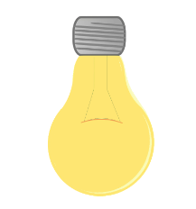
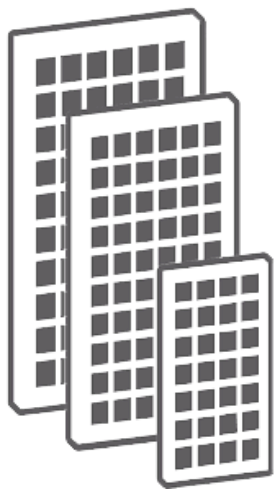
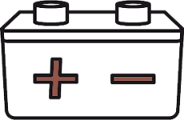
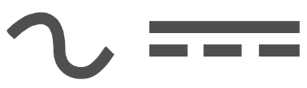
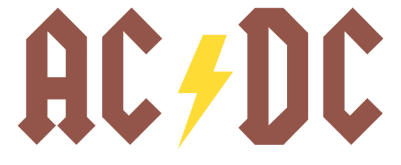
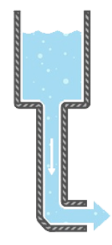

Solar panels are an extraordinary invention, they convert the sun’s light into energy! The panels themselves are made of silicon, a component which is mostly found in beach sand. When light reaches the silicon, enhanced by the glass casing, it imitates an electrical current which is later converted into raw (DC) power, this is called the “Photovoltaic Effect”. Solar energy is considered clean energy because it is fully renewable and generating this energy is solely done by capturing sunlight, they do however have a high production cost, making the panels themselves quite expensive.


What is a Charge Controller?
A charge controller regulates the current coming from the solar panels that charge up the batteries. Without this the batteries would constantly be charging at a fluctuating current, which could eventually damage the battery. The charge controller also detects how much energy has been stored so it can stop charging when the batteries are fully charged. It also detects the battery's temperature and stop them from overheating when needed.
Battery System
Numerous battery systems could be used to store the power generated by the solar panels. There are “AC-Battery systems” and “DC-Battery systems” both have their own pros and cons. The difference between these systems is that a DC battery will use the same device to convert the solar energy into DC energy and into usable power. The AC battery, however, has its own built-in converter allowing the battery to convert the stored DC power to AC power, this can be useful for directly powering your appliances. The most common batteries use lithium to store their energy.

Power inverter (DC-AC)
A power inverter is a device or piece of circuitry that changes a Direct Current into an Alternating Current. It does the complete opposite of what a converter does, which is change an AC current into DC. Such a device can be completely electronic, in which case it is powered by the incoming DC current or it can have mechanical features. When an inverter with mechanical features is used it also partially relies on a circuit to invert its power. Inverters are mainly used for appliances with high currents.


DC Power
DC power (also Direct Current), is considered an unidirectional flow of energy, it only moves one way. We can see this as a water tank with a hose on one end, water is only allowed to go out the hose and due to the outgoing water it is not possible for water to make its way back into the tank. This means that, due to power moving only from point A to point B, there will be a constant voltage over time. of course as the source depletes the outgoing voltage will start to drop.

AC Power
AC power (also Alternate Current) describes an electrical current that changes direction with time, unlike DC, which flows in one direction, 60 times per sec(60Hz) in USA and 50(50Hz) in Europe. AC is used for powering houses and offices, is cheaper and mostly produced in power plants. It has less energy loss when transmitting over long distances. Even though Solar Panels produce DC, it’s often converted into AC to account for all home appliances.BuyBuyBuy